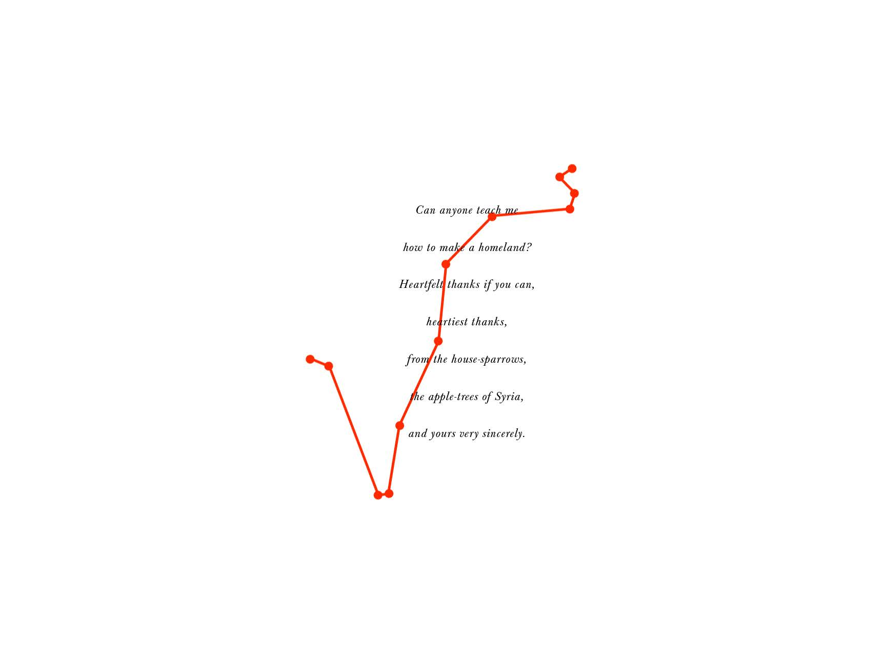
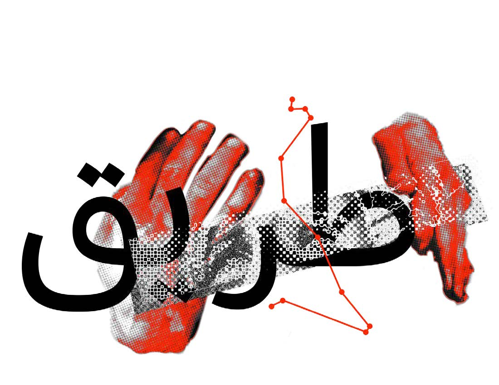
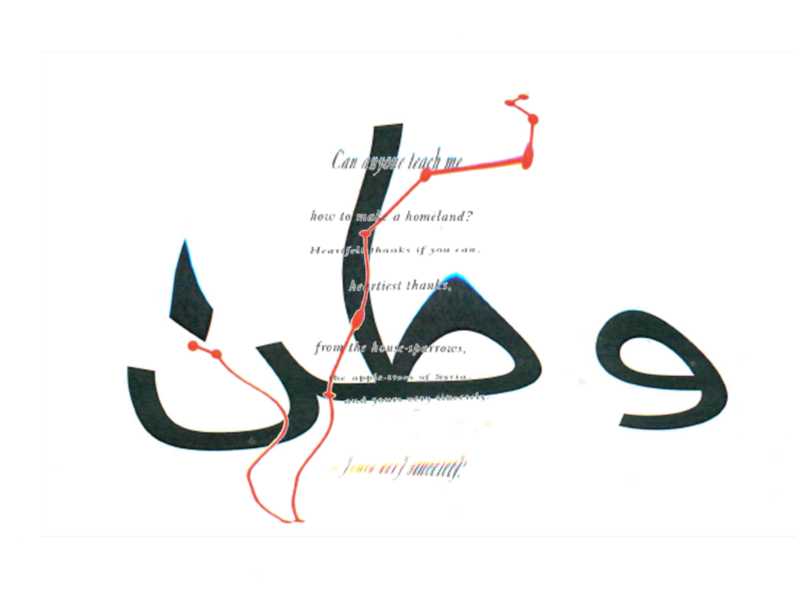

—yigit toprak
Graphic Designer
i. Projects
- Images of Body and Story
- 1984 (Obliteration)
- Emperor Display
- Wood Type
- Dialogue With The Machine
- Emperor (WEB)
- Escape Route
- Factory Reset
- All About Process
ii. Archives
iii. Info & Contact
About Escape Route
The escape route project seeks to present a map that the Syrian refugees and we perceive differently. Two alternative approaches are used in the piece. The distance between Suruc and Kobani is shown in the foreground so that those of us who have only been able to observe what is happening in Syria from a distance and from media and other sources can understand it (refugee route of Syrians).

For us, it is merely another set of oblique lines and dots similar to those we would see on a typical map. While the background graphic depicts the same map from the perspective of a Syrian refugee.While, the background image shows the same map from a Syrian refugee’s perspective. It consists of the same map that we see with the combinations of the words road “طريق’ ” (tariq) and homeland “وطن”(watan) in the distorted way, as a metaphor for the way Syrian refugees’ perspective of their escape route from war and conflict.


